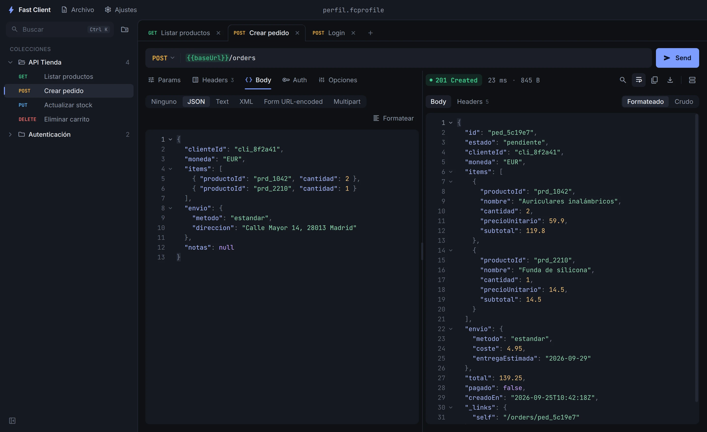
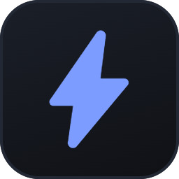

Instantáneo
Al abrir ya estás en el área de trabajo, con tus pestañas donde las dejaste. Sin login, sin splash.
Gratis y open source · Windows 10 / 11
Un cliente HTTP de escritorio que abre al instante, no pide cuenta, no sube nada a la nube y guarda todo tu trabajo en un solo archivo.

Al abrir ya estás en el área de trabajo, con tus pestañas donde las dejaste. Sin login, sin splash.
Colecciones, requests, headers y variables viven en un .fcprofile que puedes copiar, versionar o enviar.
La interfaz no hace llamadas de red. Íconos y fuentes van dentro de la app. Tus datos no salen de tu equipo.
Árbol de colecciones con arrastrar y soltar, renombrado en línea y pestañas que se restauran al volver.
{{así}}Define baseUrl o token por colección y úsalos en URL, headers y body, resaltados al escribir.
Pega un cURL en la barra de URL para importarlo, o copia cualquier request como cURL con un clic.
Tema oscuro por defecto, claro o según el sistema. Zoom ajustable y atajos de teclado para todo.
Las nuevas versiones se descargan en segundo plano y se instalan al cerrar. Puedes desactivarlo en Preferencias.
Un único archivo JSON legible. Guárdalo en tu repositorio junto al proyecto, pásalo a un compañero o llévalo en un USB. Nunca guarda las respuestas del servidor, así que no arrastra datos sensibles.
{
"app": "fast-client",
"name": "perfil",
"collections": [{
"name": "API Tienda",
"variables": [{
"key": "baseUrl",
"value": "https://api.tienda.dev"
}],
"requests": [{
"name": "Crear pedido",
"method": "POST",
"url": "{{baseUrl}}/orders"
}]
}]
}
Gratis, sin cuenta y con el código abierto bajo licencia MIT.
Descargar para WindowsEl instalador aún no está firmado, así que Windows puede mostrar «Windows protegió su PC». Pulsa Más información y luego Ejecutar de todos modos.